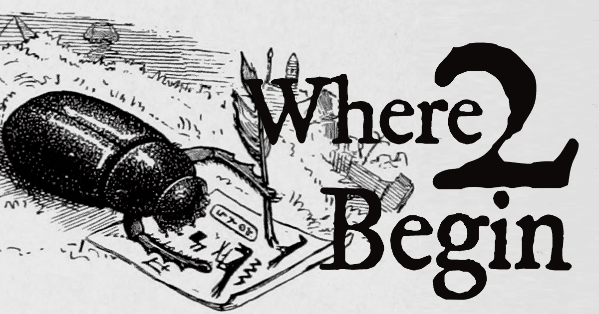

Where2Begin?
What is Where2Begin?
Where2Begin randomly generates an opening sentence for a novel/story by mashing together the opening sentences of 100 famous novels. The script randomly arranges the names, locations, concepts, genders, possessions, times, etc. to come up with mostly quirky but occasionally suprising results.
Why?
Where2Begin is an expressive computing project that aims to show the
fluidity of language, meaning, gender, and imagination.
Is it free?
Yes, you can use the sentences generated by the tool freely. You are also permitted to use, copy, modify, and/or distribute this software for any purpose without fee, provided that the below copyright notice and this permission notice appear in all copies. The full code is available at
https://github.com/sercansengun/where2begin
Some of the sentences don't make sense? / Randomization sometimes go awry?
Agreed. However the majority of the results are pretty interesting.
How can I contact you?
Please use
@sercan314159
Which novels?
- Guillaume Apollinaire, Alcools (1913)
- Jane Austen, Pride and Prejudice (1813)
- Paul Auster, City of Glass (1985)
- James Baldwin, Go Tell It On the Mountain (1953)
- James Baldwin, This Morning, This Evening, So Soon (1965)
- J. G. Ballard, Crash (1973)
- Iain M. Banks, The Crow Road (1992)
- John Barth, The End of the Road (1958)
- Simone de Beauvoir, The Second Sex (1949)
- Samuel Beckett, Murphy (1938)
- Saul Bellow, Herzog (1964)
- Emily Brontë, Wuthering Heights (1847)
- Anita Brookner, The Debut (1981)
- Edward George Bulwer-Lytton, Paul Clifford (1830)
- Italo Calvino, If on a winter's night a traveler (1979)
- Miguel de Cervantes, Don Quixote (1605)
- Albert Camus, The Stranger (1942)
- Louis-Ferdinand Céline, Journey to the End of the Night (1932)
- Joseph Conrad, Lord Jim (1900)
- Robert Coover, The Origin of the Brunists (1966)
- James Crumley, The Last Good Kiss (1978)
- Don DeLillo, Underworld (1997)
- Charles Dickens, A Tale of Two Cities (1859)
- Charles Dickens, David Copperfield (1850)
- Joan Didion, Play It As It Lays (1970)
- Fyodor Dostoyevsky, Notes from Underground (1864)
- Marguerite Duras, The Lover (1984)
- George Eliot, Middlemarch (1872)
- Stanley Elkin, The Dick Gibson Show (1971)
- Ralph Ellison, Invisible Man (1952)
- Louise Erdrich, Tracks (1988)
- Jeffrey Eugenides, Middlesex (2002)
- William Faulkner, Intruder in the Dust (1948)
- William Faulkner, The Sound and the Fury (1929)
- F. Scott Fitzgerald, The Great Gatsby (1925)
- Ford Madox Ford, The Good Soldier (1915)
- Alain Fournier, Le Grand Meaulnes (1913)
- William Gaddis, A Frolic of His Own (1994)
- William Gaddis, J R (1975)
- William Gibson, Neuromancer (1984)
- Graham Greene, Brighton Rock (1938)
- Joseph Heller, Catch-22 (1961)
- Ernest Hemingway, A Farewell to Arms (1929)
- Ernest Hemingway, For Whom the Bell Tolls (1940)
- Ernest Hemingway, The Old Man and the Sea (1952)
- Zora Neale Hurston, Their Eyes Were Watching God (1937)
- Henry James, The Wings of the Dove (1902)
- Ha Jin, Waiting (1999)
- James Joyce, A Portrait of the Artist as a Young Man (1916)
- James Joyce, Finnegans Wake (1939)
- James Joyce, Ulysses (1922)
- Franz Kafka, Metamorphosis (1915)
- Franz Kafka, The Trial (1925)
- C. S. Lewis, The Voyage of the Dawn Treader (1952)
- Sinclair Lewis, Babbitt (1922)
- Sinclair Lewis, Elmer Gantry (1927)
- David Lodge, Changing Places (1975)
- Rose Macaulay, The Towers of Trebizond (1956)
- André Malraux, Man's Fate (1933)
- David Markson, Wittgenstein's Mistress (1988)
- Gabriel García Márquez, One Hundred Years of Solitude (1967)
- W. Somerset Maugham, The Razor's Edge (1944)
- Daphne du Maurier, Rebecca (1938)
- Carson McCullers, The Heart is a Lonely Hunter (1940)
- Herman Melville, Moby-Dick (1851)
- Margaret Mitchell, Gone With The Wind (1936)
- Toni Morrison, Beloved (1987)
- Toni Morrison, Paradise (1998)
- Vladimir Nabokov, Lolita (1955)
- Audrey Niffenegger, The Time Traveller's Wife (2003)
- Sara Nović, Girl at War (2015)
- Flannery O’Connor, A Good Man Is Hard to Find (1953)
- George Orwell, 1984 (1949)
- Sylvia Plath, The Bell Jar (1963)
- Richard Powers, Galatea 2.2 (1995)
- Jacques Prévert, Paroles (1946)
- Marcel Proust, Swann's Way (1913)
- Thomas Pynchon, Gravity's Rainbow (1973)
- Thomas Pynchon, The Crying of Lot 49 (1966)
- JK Rowling, Harry Potter and the Philosopher's Stone (1997)
- Salman Rushdie, Midnight's Children (1981)
- Salman Rushdie, The Satanic Verses (1988)
- Raphael Sabatini, Scaramouche (1921)
- Antoine de Saint-Exupéry, The Little Prince (1943)
- J. D. Salinger, The Catcher in the Rye (1951)
- Dodie Smith, I Capture the Castle (1948)
- Aleksandr Solzhenitsyn, The Gulag Archipelago (1973)
- Gilbert Sorrentino, Imaginative Qualities of Actual Things (1971)
- Gertrude Stein, The Making of Americans (1925)
- Donna Tartt, The Secret History (1992)
- Leo Tolstoy, Anna Karenina (1877)
- Mark Twain, Adventures of Huckleberry Finn (1885)
- Anne Tyler, Back When We Were Grownups (2001)
- Boris Vian, Froth on the Daydream (1947)
- Kurt Vonnegut, Breakfast of Champions (1973)
- David Foster Wallace, The Broom of the System (1987)
- Nathanael West, Miss Lonelyhearts (1933)
- E.B. White, Charlotte’s Web (1952)
- Jeanette Winterson, Oranges Are Not the Only Fruit (1985)
- Virginia Woolf, A Room of One's Own (1929)
- Virginia Woolf, Mrs. Dalloway (1925)
Where2Begin. Copyright (c) 2016 Sercan Şengün sercansengun.com
Permission to use, copy, modify, and/or distribute this software for any purpose without fee is hereby granted, provided that the above copyright notice and this permission notice appear in all copies.
